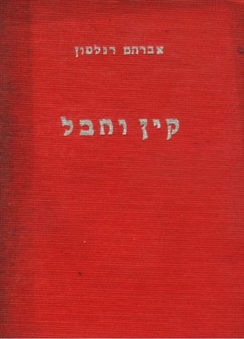
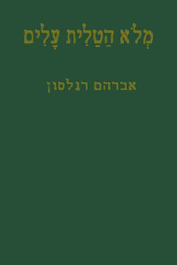
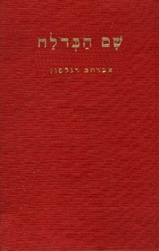
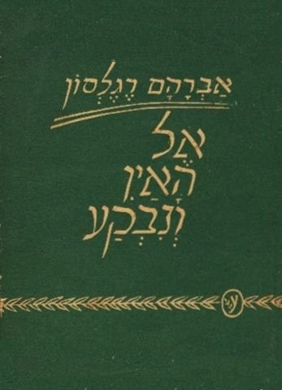
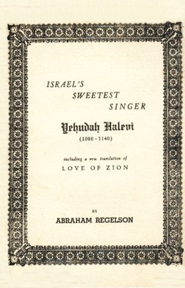
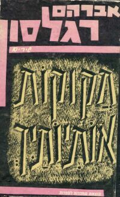
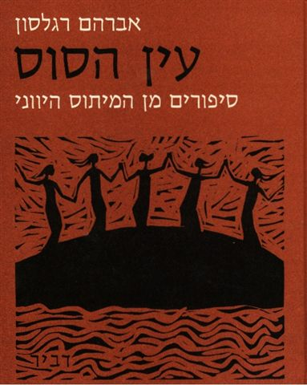
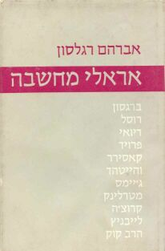
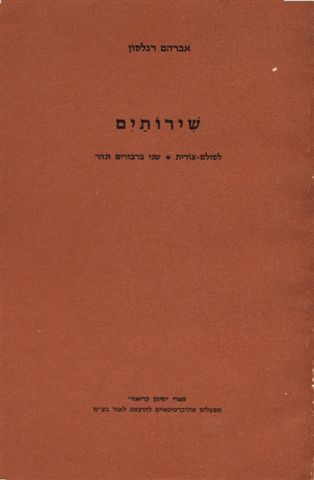
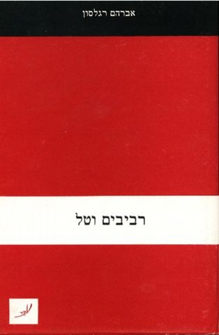

Works by Regelson
Many of Regelson's works can be found on the website of the Ben-Yehuda
Project: www.benyehuda.org.
Books:
(Cain and Abel) קיין והבל
(A Shawlful of Leaves) מלוא הטלית עלים
(There the Crystal Is) שם הבדולח
(Non-Being and Was Cleft) אל האין ונבקע
Israel's Sweetest Singer - Yehuda Halevi
Yad Halashon יד הלשון
(Engraved are Thy Letters) חקוקות אותיותיך
(Fountain of the Horse) עין הסוס
(Mighty Ones of Thought) אראלי מחשבה
(The House of the Spark) בית הניצוץ
(Two Poems) שירותיים
(Spring Showers and Dew) רביבים וטל
(The Dolls' Journey to Eretz-Israel) מסע הבובות לארץ ישראל
|
 |
קיין והבל
שיר
1932 | (Cain and Abel)
A Poem
1932 |
|
|
 |
מלוא הטלית עלים
מסות ושיחות
1941 | (A Shawlful of Leaves)
Essays and Discussions
1941 |
|
|
 |
שם הבדולח
מראות ואגדות
1942 | (There the Crystal Is)
Sights and Legends
1942 |
|
|
 |
אל האין ונבקע
שירים
1943 | (Non-Being and Was Cleft)
Poems
1943 |
|
|
 |
Israel's Sweetest Singer: Yehuda Halevi
Essay with Original Poetry Translations
1943
|
|
|
יד הלשון
ניבים וביטויים
אנגלית-עברית
1948 | Yad Halashon
Handbook of Over 2000 English Idioms and Expressions,
with Hebrew Equivalents
1948 |
|
|
 |
חקוקות אותיותיך
שירים
1964 | (Engraved are Thy Letters)
Poems
1964 |
|
|
 |
עין הסוס
סיפורי המיתולוגיה היונית
1967 | (Fountain of the Horse)
Tales from Greek Mythology
1967 |
|
|
 |
אראלי מחשבה
האזנות לדברי אחרונים
1969 | (Mighty Ones of Thought)
Hearkenings to Latterday Sages
1969 |
|
|
בית הניצוץ
מראות ואגדות
1972 | (The House of the Spark)
Sights and Legends
1972 |
|
|
 |
שירותיים
שני שירים
1972 | (Two Poems)
Two Poems
1972 |
|
|
 |
רביבים וטל
שיחות ואוללות שיר
1979 | (Spring Showers and Dew)
Talks and Poetry Gleanings
1979 |
|
|
| |
|
מסע הבובות לארץ-ישראל
כל המהדורות
| |
|
|
|
|
|
|
|
|
|
|
The Dolls' Journey to Eretz-Israel
Translated into English by Sharona (Regelson) Tel-Oren
Verses translated by Naomi (Regelson) Bar-Natan
All editions
|
| |
|
 | | 2004 |
|
|
|
Translations from
English to Hebrew:
Poems by
Robert Herrick, William Blake, William Wordsworth, Walt Whitman,
William Cullen Bryant, Francis Thompson, Carl Sandburg, Emily
Dickinson and others.
Kipling: Just So Stories
Melville: Billy Budd and other Stories
Hawthorne: The Scarlet Letter
M. M. Kaplan: The Meaning of God in Modern Jewish Religion
Solomon Goldman: The Jew and the Universe
Translations from
Hebrew to English:
M. Amishai (Maisels):
Thought and Truth
J. Klatzkin: In Praise of Wisdom
Yaakov Cahan: Eliphal
S. Kushnir: The Village Builder
Passover Haggadah
Regelson's own poems: Two Swans and a River
and Anent the Man of the Stars
Translations from Yiddish to English, and Yiddish to Hebrew:
Poems, Articles, plays and other literature.
Editing:
Riv'on Katan
(Little Quarterly for Poetry and Thought) [Hebrew Poetry Society
of America]
Works by Bialik, Ibn Gvirol, Tchernichovsky, Walt Whitman, Alfred
North Whitehead and others Original poetry and articles and
various translations.
Regular Feature
Columns (at different times), in the Hebrew press:
"Asicha":
"May I Speak" in Davar
"Shayit Chofshi": "Free Sailing" in Al HaMishmar
"Mishpatei Chivui": "Declarative Satements" in HaPoel HaTzair
|